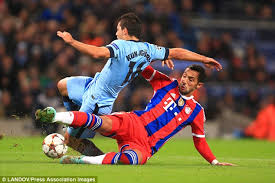

Football Rules

Football (Soccer) Rules
Football (Soccer) is one of the oldest sports in the world and with that; it’s also one of the most recognised. The pinnacle of the international game comes in the form the Football World Cup. There are also tournament such as the Euro Championships, Copa America and the African Cup of Nations. Domestically the strongest leagues come from England (English Premier League), Spain (La Liga), Italy (Serie A) and Germany (Bundesliga). In parts of the world the sport is also known as Soccer.
Object of the Game
The aim of football is to score more goals then your opponent in a 90 minute playing time frame. The match is split up into two halves of 45 minutes. After the first 45 minutes players will take a 15 minute rest period called half time. The second 45 minutes will resume and any time deemed fit to be added on by the referee (injury time) will be accordingly.
Players & Equipment
Each team consists of 11 players. These are made up of one goalkeeper and ten outfield players. The pitch dimensions vary from each ground but are roughly 120 yards long and 75 yards wide. On each pitch you will have a 6 yard box next to the goal mouth, an 18 yard box surrounding the 6 yard box and a centre circle. Each half of the pitch must be a mirror image of the other in terms of dimensions.
Essentially the equipment that is needed for a soccer match is pitch and a football. Additionally players can be found wearing studded football boots, shin pads and matching strips. The goalkeepers will additionally wear padded gloves as they are the only players allowed to handle the ball. Each team will have a designated captain.
Scoring
To score the ball must go into your opponent’s goal. The whole ball needs to be over the line for it to be a legitimate goal. A goal can be scored with any part of the body apart from the hand or arm up to the shoulder. The goal itself consists of a frame measuring 8 feet high and 8 yards wide.
Winning the Game
To win you have to score more goals than that of your opponents. If the scores are level after 90 minutes then the game will end as a draw apart from in cup games where the game can go to extra time and even a penalty shootout to decide the winner. Players must use their feet to kick the ball and are prohibited to use their hands apart from goalkeepers who can use any part of their body within the 18 yard box (of which more can be found out in the next section).
Rules of Football (Soccer)
A match consists of two 45 minutes halves with a 15 minute rest period in between.
Each team can have a minimum off 11 players (including 1 goalkeeper who is the only player allowed to handle the ball within the 18 yard box) and a minimum of 7 players are needed to constitute a match.
The field must be made of either artificial or natural grass. The size of pitches is allowed to vary but must be within 100-130 yards long and 50-100 yards wide. The pitch must also be marked with a rectangular shape around the outside showing out of bounds, two six yard boxes, two 18 yard boxes and a centre circle. A spot for a penalty placed 12 yards out of both goals and centre circle must also be visible.
The ball must have a circumference of 58-61cm and be of a circular shape.
Each team can name up to 7 substitute players. Substitutions can be made at any time of the match with each team being able to make a maximum of 3 substitutions per side. In the event of all three substitutes being made and a player having to leave the field for injury the team will be forced to play without a replacement for that player.
Each game must include one referee and two assistant referee’s (linesmen). It’s the job of the referee to act as time keeper and make any decisions which may need to be made such as fouls, free kicks, throw ins, penalties and added on time at the end of each half. The referee may consult the assistant referees at any time in the match regarding a decision. It’s the assistant referee’s job to spot offside’s in the match (see below), throw ins for either team and also assist the referee in all decision making processes where appropriate.
If the game needs to head to extra time as a result of both teams being level in a match then 30 minutes will be added in the form of two 15 minute halves after the allotted 90 minutes.
If teams are still level after extra time then a penalty shootout must take place.
The whole ball must cross the goal line for it to constitute as a goal.
For fouls committed a player could receive either a yellow or red card depending on the severity of the foul; this comes down to the referee’s discretion. The yellow is a warning and a red card is a dismissal of that player. Two yellow cards will equal one red. Once a player is sent off then they cannot be replaced.
If a ball goes out of play off an opponent in either of the side lines then it is given as a throw in. If it goes out of play off an attacking player on the base line then it is a goal kick. If it comes off a defending player it is a corner kick.
The Offside Rule in Football
Offside can be called when an attacking player is in front of the last defender when the pass is played through to them. The offside area is designed to discourage players from simply hanging around the opponent’s goal waiting for a pass. To be onside they must be placed behind the last defender when the ball is played to them. If the player is in front of that last defender then he is deemed to be offside and free kick to the defending team will be called.
A player cannot be caught offside in their own half. The goalkeeper does not count as a defender. If the ball is played backwards and the player is in front of the last defender then he is deemed to be not offside.